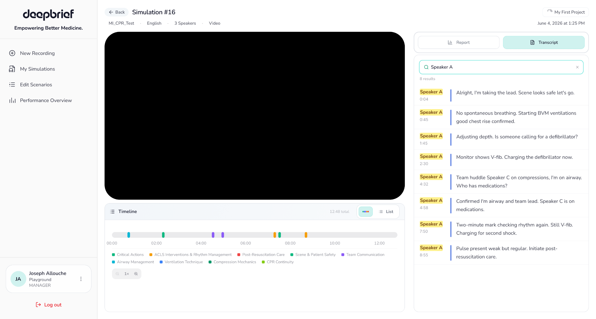

AI-supported clinical debriefing
DeepBrief analyzes medical simulations and helps trainees and instructors review performance through criteria, transcripts, video, and AI-generated insights.
Turning a fragmented clinical review experience into one connected workspace where video, performance, timeline events, transcripts, and supporting evidence work together.
DeepBrief analyzes medical simulations and helps trainees and instructors review performance through criteria, transcripts, video, and AI-generated insights.
The previous interface contained useful feedback, but users had to move between separate report, timeline, and transcript views to understand the full story.
Working directly with CTO Yoad Cohen, I redesigned the core Simulation Overview and iterated through rapid prototypes, feedback, and interface testing.
Performance outcomes were split into separate columns, categories repeated across the page, and the transcript lived in a long standalone view. Users could access the information, but connecting feedback to the exact moment that produced it required extra navigation and memory.
How might we help users move from simulation playback to clear, evidence-based feedback without losing context?
The new experience follows the way a trainee or instructor naturally reviews a simulation, beginning with the recording and ending with a clear understanding of what happened and what should improve.
The redesigned layout keeps the simulation as the visual anchor while the right panel provides focused analysis. Search and timeline tools shorten the path from a question to the exact evidence that answers it.

020103Instead of making achievement status the main structure, the redesign groups criteria under the clinical category they belong to. Passed, incomplete, and missing states become attributes inside a more meaningful hierarchy.
The transcript now lives beside the video and supports search. Matching terms are highlighted, speaker colors stay consistent, and timestamps make it easier to connect language with the simulation.
The visual timeline provides a quick map of the simulation, while the list view gives users a precise sequence of evaluated events. Both use the same category colors as the report.
Individual criteria expand to show written feedback, transcript evidence, and the relevant video moment. Users can understand not only the result, but also why the result was given.
The score breakdown combines the overall result, a category visualization, AI-generated summary, and exact category performance in one focused view. Users can move from a number to practical priorities.
This recording demonstrates how the final interface brings report categories, transcript review, evidence, and timeline navigation into the same simulation workspace.
During the same internship, I designed a separate Performance Overview experience for understanding broader results and patterns across simulations. This shifted the design challenge from reviewing one session to making higher-level performance information easy to interpret.
The redesign was not only a visual refresh. It changed how users move through information, connect results with evidence, and understand a simulation as one continuous story.